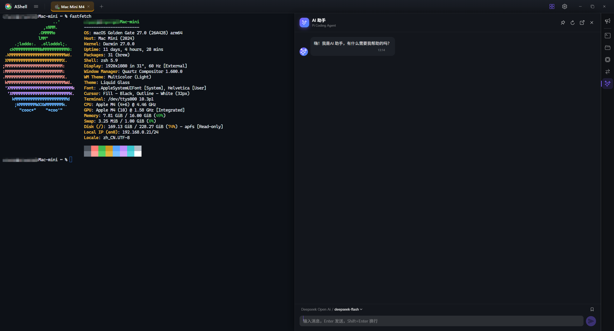

性能
WebGL 硬件加速渲染，原生 ConPTY / forkpty，SFTP 流式传输——大输出、大文件依然行云流水。
开源跨平台终端 · MIT License
一个现代化、跨平台的终端 / SSH 客户端 —— 把本地终端、远程 SSH、SFTP、主机监控、端口转发与 AI 助手整合进一个桌面应用。
注重性能、隐私与可定制。凭证本地加密存储，AI 助手运行在你自己的机器上，密钥永不离开你的设备。

WebGL 硬件加速渲染，原生 ConPTY / forkpty，SFTP 流式传输——大输出、大文件依然行云流水。
密码与私钥使用 AES-256-GCM 加密落盘，永不通过接口外泄；AI 密钥留在本机，不经任何第三方中转。
主题、字体、透明度、壁纸、鼠标行为随你调配；中英双语界面，随选随切。
从连接到运维，一个应用全覆盖。
同一套核心，Docker 一键部署。浏览器即可使用 SSH / SFTP / 终端与 AI 助手，数据全部留在你自己的服务器上。
$ docker run -d --name ashell-server \
-p 8090:8090 \
-v ~/.ashell:/data/.ashell \
ghcr.io/vcqr/ashell-server:latest拉取 GHCR 多架构镜像（amd64 / arm64），首次启动自动生成访问令牌。
交叉编译 musl 静态二进制，组装极简 alpine 镜像，容器内零编译。
构建前端产物后编译 ashell-server，一行命令在本机 8090 端口起服务。
前往 GitHub Releases 获取对应平台的安装包，所有平台均提供 x86_64 与 ARM64 构建。
$ git clone https://github.com/vcqr/ashell.git
$ cd ashell && npm install
$ npm run tauri dev # 开发模式
$ npm run tauri build # 生产构建